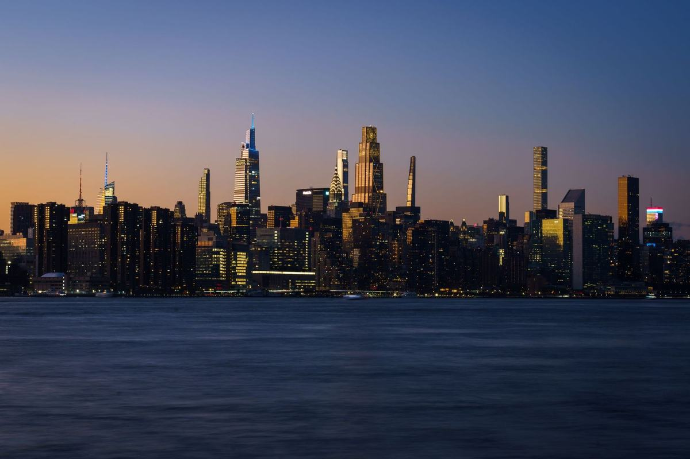

សិនហ្គេន / អឺរ៉ុប
ការប្រឹក្សាទិដ្ឋាការសិនហ្គេនសម្រាប់ដំណើរទៅអឺរ៉ុប។ គោលដៅពេញនិយមរួមមាន បារាំង អ៊ីតាលី អាល្លឺម៉ង់ អេស្ប៉ាញ ស្វីស ន័រវែស ហ្វាំងឡង់ បែលហ្ស៊ិក និងអូទ្រីស។
សួរអំពី សិនហ្គេន / អឺរ៉ុបទិដ្ឋាការដោយភាពងាយស្រួល
ការប្រឹក្សាទិដ្ឋាការសម្រាប់អឺរ៉ុប ចក្រភពអង់គ្លេស កាណាដា សហរដ្ឋអាមេរិក និងប្រទេសជាច្រើនទៀត ជាមួយក្រុមតែមួយ និងជំនួយពីដើមដល់ចប់ ចាប់ពីការប្រឹក្សាដំបូង ដល់ការណាត់ជួបស្ថានទូត។
ការធ្វើផែនការដំណើរកម្សាន្ត ឬសម្រាកលំហែនៅបរទេស។
ការប្រជុំ សន្និសីទ និងដំណើរការងាររបស់ក្រុមហ៊ុន។
ពាក្យសុំសម្រាប់ការសិក្សានៅបរទេស។
ការទៅលេងគ្រួសារ មិត្តភក្តិ ឬព្រឹត្តិការណ៍នៅបរទេស។
ការឆ្លងកាត់ប្រទេសមួយ ក្នុងដំណើរទៅកាន់គោលដៅរបស់អ្នក។
ការធ្វើដំណើរទៅព្យាបាលជំងឺនៅបរទេស។
ការណែនាំដំបូងអំពីផ្លូវអន្តោប្រវេសន៍ និងលំនៅអចិន្ត្រៃយ៍។
ការបន្តសុពលភាព ឬពន្យារទិដ្ឋាការដែលអ្នកមានស្រាប់។
ការត្រួតពិនិត្យឯកសាររបស់អ្នកដោយប្រុងប្រយ័ត្ន មុនពេលដាក់ពាក្យ។
ជំនួយក្នុងការរៀបចំពេលណាត់ជួបនៅស្ថានទូត ឬកុងស៊ុលរបស់អ្នក។
ការយល់ដឹង និងរៀបចំធានារ៉ាប់រងការធ្វើដំណើរសម្រាប់ដំណើររបស់អ្នក។
ការសន្ទនាដំបូងអំពីផែនការ ជម្រើស និងសិទ្ធិទទួលបានរបស់អ្នក។
លក្ខខណ្ឌ រយៈពេលដំណើរការ និងថ្លៃសេវា ប្រែប្រួលតាមគោលដៅ ប្រភេទទិដ្ឋាការ និងកាលៈទេសៈផ្ទាល់ខ្លួន។ ការសម្រេចចិត្តចុងក្រោយលើទិដ្ឋាការនីមួយៗ ជាសិទ្ធិរបស់ស្ថានទូត ឬអាជ្ញាធរដែលពាក់ព័ន្ធ ហើយគ្មានលទ្ធផលណាអាចធានាបានទេ។
ការប្រឹក្សាទិដ្ឋាការសិនហ្គេនសម្រាប់ដំណើរទៅអឺរ៉ុប។ គោលដៅពេញនិយមរួមមាន បារាំង អ៊ីតាលី អាល្លឺម៉ង់ អេស្ប៉ាញ ស្វីស ន័រវែស ហ្វាំងឡង់ បែលហ្ស៊ិក និងអូទ្រីស។
សួរអំពី សិនហ្គេន / អឺរ៉ុប
ការណែនាំអំពីទិដ្ឋាការសម្រាប់ឡុងដ៍ ស្កុតឡែន និងអៀរឡង់ខាងជើង ចាប់ពីការជ្រើសរើសប្រភេទត្រឹមត្រូវ ដល់ការរៀបចំឯកសាររបស់អ្នក។
សួរអំពី ចក្រភពអង់គ្លេស
ការប្រឹក្សាទិដ្ឋាការសម្រាប់កាណាដា ចាប់ពីការសន្ទនាដំបូង ដល់ការត្រួតពិនិត្យឯកសាររបស់អ្នក។
សួរអំពី កាណាដា
ការប្រឹក្សាទិដ្ឋាការសម្រាប់សហរដ្ឋអាមេរិក រួមទាំងជំនួយក្នុងការរៀបចំពេលណាត់ជួបនៅស្ថានទូតរបស់អ្នក។
សួរអំពី សហរដ្ឋអាមេរិកម៉ិកស៊ិក, ប្រេស៊ីល, ប៉ាណាម៉ា, កូឡុំប៊ី, ប៉េរូ, អាហ្សង់ទីន
អូទ្រីស, បែលហ្ស៊ិក, បេឡារុស, ប៊ុលហ្គារី, ក្រូអាស៊ី, ស៊ីប, ឆេគី, ដាណឺម៉ាក, អេស្តូនី, ហ្វាំងឡង់, បារាំង, ហ្សកហ្ស៊ី, អាល្លឺម៉ង់, ក្រិក, ហុងគ្រី, អ៊ីស្លង់, អៀរឡង់, អ៊ីតាលី, កាហ្សាក់ស្ថាន, កូសូវ៉ូ, លីទុយអានី, លុចសំបួរ, ម៉ូណាកូ, ម៉ុងតេណេហ្គ្រោ, ហូឡង់, ន័រវែស, ប៉ូឡូញ, ព័រទុយហ្គាល់, រ៉ូម៉ានី, សាន់ម៉ារីណូ, ស្លូវ៉ាគី, ស្លូវេនី, អេស្ប៉ាញ, ស៊ុយអែត, ស្វីស, តួកគី, អ៊ុយក្រែន, បុរីវ៉ាទីកង់
កម្ពុជា, ចិន, ជប៉ុន, កូរ៉េខាងត្បូង, សិង្ហបុរី, ម៉ាឡេស៊ី, វៀតណាម, ឥណ្ឌូនេស៊ី, មីយ៉ាន់ម៉ា, ឡាវ, ឥណ្ឌា, ប៊ូតង់, ម៉ុងហ្គោលី
អេមីរ៉ាតអារ៉ាប់រួម (ឌូបៃ), អារ៉ាប៊ីសាអូឌីត, កាតា, អូម៉ង់, អេហ្ស៊ីប
បញ្ជីនេះគ្របដណ្តប់អឺរ៉ុប និងតំបន់ផ្សេងទៀត ប៉ុន្តែមិនមែនគ្រប់ប្រទេសក្នុងបញ្ជីសុទ្ធតែជាសមាជិកសិនហ្គេនទេ។ មិនឃើញក្នុងបញ្ជី? សួរយើងថាតើយើងអាចជួយបានដែរឬទេ។
ប្រាប់យើងអំពីផែនការ គោលដៅ និងអាទិភាពរបស់អ្នក។
យើងជួយអ្នករៀបចំឯកសារ ឬរៀបចំកម្មវិធីធ្វើដំណើរ។
ធ្វើតាមជំហានដាក់ពាក្យដែលពាក់ព័ន្ធ ឬបញ្ជាក់ផែនការធ្វើដំណើររបស់អ្នក។
ធ្វើដំណើរដោយមានការរៀបចំរួចរាល់។
ទេ។ ការសម្រេចទិដ្ឋាការជាសិទ្ធិរបស់ស្ថានទូត ឬអាជ្ញាធរដែលពាក់ព័ន្ធ។ យើងផ្តល់ការប្រឹក្សា និងជួយអ្នករៀបចំ ប៉ុន្តែយើងមិនអាចសន្យាលទ្ធផលណាមួយបានទេ។
យើងផ្តល់ការប្រឹក្សាលើប្រទេសជាច្រើន។ គោលដៅដែលត្រូវបានស្នើសុំច្រើនបំផុតទាំងបួនរបស់យើងគឺ សិនហ្គេន / អឺរ៉ុប ចក្រភពអង់គ្លេស កាណាដា និងសហរដ្ឋអាមេរិក ហើយបញ្ជីពេញលេញមាននៅលើទំព័រនេះ។ ប្រសិនបើគោលដៅរបស់អ្នកមិនមានក្នុងបញ្ជី សូមទាក់ទងមកយើង ហើយយើងនឹងប្រាប់ថាតើយើងអាចជួយបានដែរឬទេ។
ផ្ញើសំណួររបស់អ្នកមកយើង ឬទាក់ទងយើងក្នុងម៉ោងធ្វើការ (ថ្ងៃច័ន្ទ ដល់ ថ្ងៃសុក្រ ម៉ោង ៩:០០ ព្រឹក – ៦:០០ ល្ងាច)។ យើងនឹងចាប់ផ្តើមដោយការប្រឹក្សាដើម្បីយល់ពីផែនការរបស់អ្នក។
មិនទាន់អាចទេ។ គេហទំព័រនេះសម្រាប់ព័ត៌មាន និងការសាកសួរ ហើយក្រុមការងាររបស់យើងនឹងណែនាំអ្នកអំពីជំហានបន្ទាប់ បន្ទាប់ពីអ្នកផ្ញើសំណួរ។
ចែករំលែកគោលដៅ និងផែនការធ្វើដំណើររបស់អ្នក ហើយយើងនឹងទាក់ទងត្រឡប់ទៅអ្នកវិញ។
ឬសរសេរមកយើងតាម៖ visasupport@laroutepremium.com